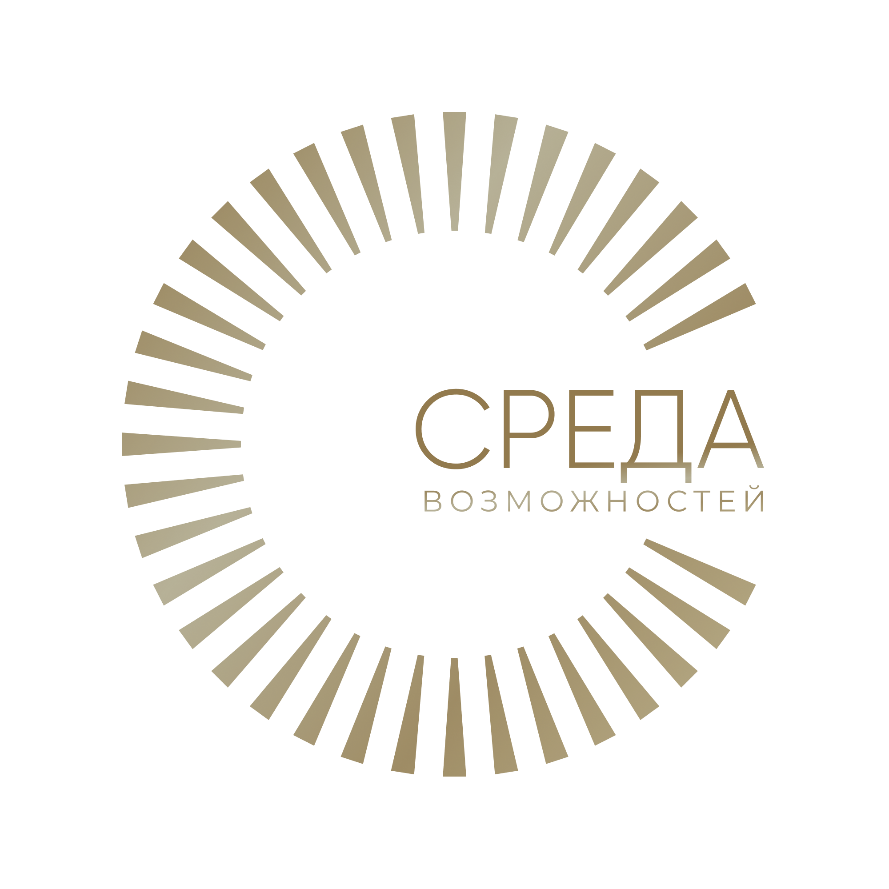
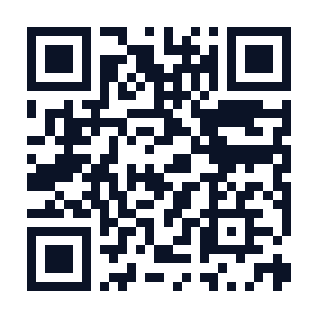

✦
Смыслы вместо жалости
Никаких манипуляций эмоциями. Каждая фраза — про систему и результат, а не про чужую беду на витрине.

Мы собираем людей, ресурсы и смыслы в одной точке — и превращаем их в системные, измеримые добрые дела. Без давления на эмоции. С прозрачностью уровня корпорации.
Объединять людей, организации, бизнес, государство и общество для поддержки и развития социальных, культурных и благотворительных инициатив. Создавать условия, в которых общественно значимые проекты получают необходимые ресурсы, финансирование, экспертную поддержку и сильное сообщество единомышленников.
Большинство фондов давят на жалость трагичными кадрами — «25-й кадр» ради импульсивного перевода. Мы выбрали другой путь: смыслы, которые понимает зрелый, состоявшийся человек.
Никаких манипуляций эмоциями. Каждая фраза — про систему и результат, а не про чужую беду на витрине.
Отчётность за 5 лет, подтверждения расходов, документы — открыто. Доверие строится на цифрах, а не на обещаниях.
Мы строим не разовые акции, а холдинг добра: несколько направлений, партнёрства с бизнесом, импакт на годы вперёд.
Доноры и партнёры — это клуб ответственных людей со своим рейтингом, кабинетом и закрытым каналом.
Мы собираем людей, ресурсы и смыслы в одной точке — и превращаем их в системное добро. Анастасия Митькина — президент фонда
Каждое направление — это живая презентация проектов с возможностью помочь в один клик.
Реабилитация, лечение, развитие — адресно и под контролем.
Фестивали и события, которые объединяют и финансируют добро.
Поддержка людей с инвалидностью — без жалости, с достоинством.
Спортивные и семейные инициативы, объединяющие тысячи людей.
Реальные события фонда. Нажмите на карточку — откроются фото, цифры и подробное описание.
Интегратор. Исследователь. Создатель экосистем.
«Я соединяю людей, идеи, ресурсы и возможности — и создаю системы, в которых каждый участник становится сильнее благодаря взаимодействию с другими.
Моя деятельность разворачивается на пересечении общественного развития, бизнеса, культуры, образования и благотворительности. Много лет я объединяю вокруг общих целей лидеров, предпринимателей, экспертов, представителей власти, общественные организации, творческие сообщества и социальные проекты.
Для меня интеграция — не про умение знакомить людей. Это технология создания среды, в которой рождаются новые проекты, партнёрства, общественные инициативы и масштабные изменения. Именно из этого подхода вырос благотворительный фонд «Среда возможностей» — пространство, где объединение ресурсов становится инструментом развития общества.
Как основатель и президент фонда я объединяю представителей бизнеса, культуры, спорта, науки, образования, благотворительности и общественных организаций для реализации социальных и культурных проектов.»
Выстраиваю устойчивые связи между людьми, организациями и инициативами: нахожу точки соприкосновения, запускаю долгосрочное сотрудничество и совместные проекты там, где раньше стороны просто не пересекались.
Разрабатываю собственную систему принципов и инструментов для объединения людей, команд, сообществ и организаций. Сегодня она оформляется в самостоятельное научно-практическое направление — на стыке психологии взаимодействия, теории социальных сетей, лидерства и системного мышления.
Работаю с самым ценным ресурсом современности — человеческим капиталом: нахожу скрытые возможности внутри сообществ и соединяю компетенции, знания, финансы, связи и опыт разных участников ради общей цели.
Мой принцип — не создавать отдельные проекты, а выстраивать экосистемы, которые развиваются самостоятельно и усиливают каждого, кто в них участвует. Из таких сред рождаются партнёрства, благотворительные инициативы, образовательные программы и культурные события.
Интеграция — не искусство нетворкинга, а самостоятельная дисциплина на стыке социологии, психологии, теории социальных сетей, организационного развития, поведенческой экономики и управления сложными системами. Речь не о количестве контактов, а о качестве систем, которые из них рождаются.
В фокусе — теория социальных сетей, социальный капитал, коллективный интеллект, психология доверия, системное мышление, организационное развитие, нейронаука взаимодействия, механизмы формирования сильных сообществ и управление сложными системами.
Работаю над книгой об интеграции как новой профессии и новой управленческой компетенции: практический опыт, исследования, реальные кейсы и собственная методология. Это не книга о нетворкинге — это книга о том, как создавать системы, которые делают сильнее каждого участника.
Выступаю на деловых форумах, конференциях и в экспертных дискуссиях. Темы: интеграция как новая управленческая компетенция · сила социальных связей и человеческий капитал · лидерство нового поколения · благотворительность как инструмент развития общества · экосистемное мышление · нетворкинг нового уровня · доверие как экономическая категория · объединение бизнеса, государства и общества.
Миссия — через энергию, осознанность, технологии и объединение людей создавать условия, в которых рождаются доверие, развитие, любовь, счастье и устойчивый общественный прогресс.
Самая большая ценность XXI века — не информация, не деньги и не технологии, а способность объединять людей вокруг общего смысла. Когда появляется доверие — появляются идеи. Когда появляются идеи — появляются проекты. Когда объединяются проекты — меняется общество. Анастасия Митькина — философия интеграции
Адресный сбор фонда — прозрачно: видно, сколько собрано и сколько осталось.
Диагноз ДЦП. После операции на спинном мозге учится ходить заново — уже делает первые шаги в ходунках. Нужен курс реабилитации на 6 месяцев.
Данные сбора обновляются каждые 24 часа
Каждый шаг для Вари — подвиг. Каждый вклад — шанс ходить самостоятельно.
⚠️ Перевод через СБП. В назначении платежа укажите: «Благотворительное пожертвование для Вари Тимохиной».
Перевод через Систему быстрых платежей (СБП): отсканируйте QR или нажмите кнопку с телефона — откроется приложение вашего банка.
⚠️ Важно: в назначении платежа укажите «Пожертвование на уставную деятельность».

Наведите камеру телефона на QR — перевод через СБП в фонд «Среда Возможностей»
За 30 секунд узнайте, какой вклад в мир вы уже создаёте — бесплатно и без регистрации.
Демо-модель с привязкой к РФ. На проде — ИИ-оценка, личный кабинет и публичный рейтинг соц-ответственности.
Заполните поля слева и нажмите «Рассчитать индекс» — увидите свой балл, уровень и вклад в цифрах.
Личный кабинет, рейтинг социальной ответственности и закрытый клуб партнёров. Не соперничество — стремление быть лучшим. Лучшие сами становятся партнёрами фонда.
Один фонд — как пузырь: залил и всё. Холдинг добра принимает масштаб и превращает его в системный импакт.
Прозрачное оформление пожертвований с понятной отчётностью для бухгалтерии и аудита.
Несколько фондов и направлений в одном холдинге — деньги работают, а не упираются в лимит.
Публичный рейтинг социальной ответственности и истории партнёрств усиливают бренд.
Поддерживаем инициативы в сфере культуры, образования, социального предпринимательства и международного сотрудничества.
Заполните форму с описанием проекта.
Наши эксперты оценят инициативу.
Обсуждаем детали и план.
Начинаем при поддержке фонда.
Документы, выписки и подтверждения расходов — открыто. Соответствие уставу и требованиям регуляторов.
Мы всегда открыты для вопросов, предложений и сотрудничества.